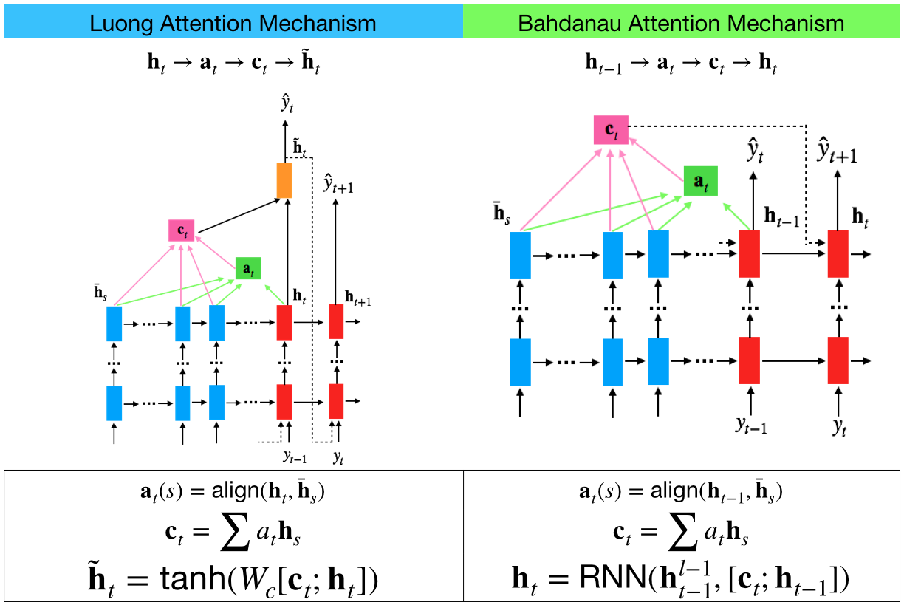
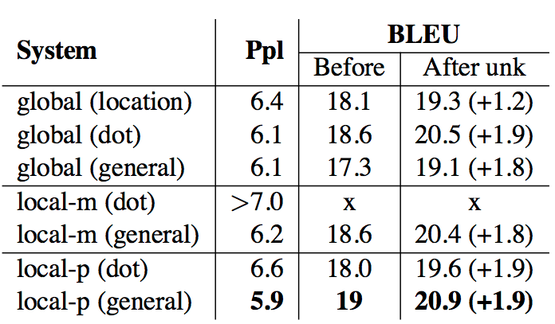
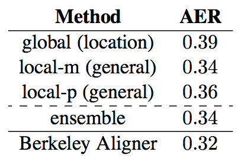

Attention Variants
Updated:
The Attention Mechanism has proved itself to be one necessary component of RNN to deal with tasks like NMT, MC, QA and NLI. It might be useful to compare some popular attention variants in NLP field.
Luong attention and Bahdanau attention
Luong attention[1] and Bahdanau attention[2] are two popluar attention mechanisms. These two attention mechanisms are similar except:
- In Luong attention alignment at time step t is computed by using hidden state at time step t, $\vec{h}_t$ and all source hidden states, whereas in Bahdanau attention hidden state at time step t-1, $\vec{h}_{t-1}$ is used.
- To integrate context vector $\vec{c}_t$, Bahdanau attention chooses to concatenate it with hidden state $\vec{h}_{t-1}$ as the new hidden state which is fed to next step to generate $\vec{h}_{t}$ as well as predict $y_{t+1}$. Luong attention instead creates an independent RNN-like structure to take the concatenatation of $\vec{c}_t$ and $\vec{h}_t$ as input and output $\vec{\tilde{h}}_t$ which serves to predict $y_{t}$ and add additional input features.

Figure 1: Compare Luong attention and Bahdanau attention
Alignment functions
From the view of the coverage of the attention, there are global attention that takes all source hidden states into account, local attention that focuses only a part of source hidden states. From the view of how to caculate the alignment, there are content-based appoarch that uses both source hidden states and current target hidden state and location-based appoarch that uses current target hidden state only.

Figure 2: Different alignment functions
Evaluation
Thang Luong et al.[1] examined different attention models (global, local-m, local-p) and different alignment functions (location, dot, general, concat). The result is in Figure 3. Their implementation concat does not yield good performances which they atrributed to that they simplified matrix $W_a$ to set the part that corresponds to $\vec{\tilde{h}}_t$ to identity (meaning?). They also observed that dot works well for the global attention and general is better for the local attention.

Figure 3 from [1]: Performances of different attentional models.
Also they conducted experiments to examine the alignment quality of different attention models whose results are shown in Figure 4. The results suggested that AER and translation scores are not well correlated.

Figure 4 from [1]: Average Error Rate (AER) scores – results of various models on the RWTH English-German alignment data.
Comments
- The local-p is like location-based pointer network.
- In [1] their implementation concat does not yield good performances. In [3] it reported that general is better than concat. [3] believed that the bilinear term $W_{a}$ allowed us to compute a similarity more flexibly than with just a dot product.
References
[1] Thang Luong et al. Effective approaches to attention-based neural machine translation. 2015
[2] Dzmitry Bahdanau et al. Neural Machine Translation by Jointly Learning to Align and Translate, 2014
[3] Danqi Chen et al. A Thorough Examination of the CNN/Daily Mail Reading Comprehension Task. 2016